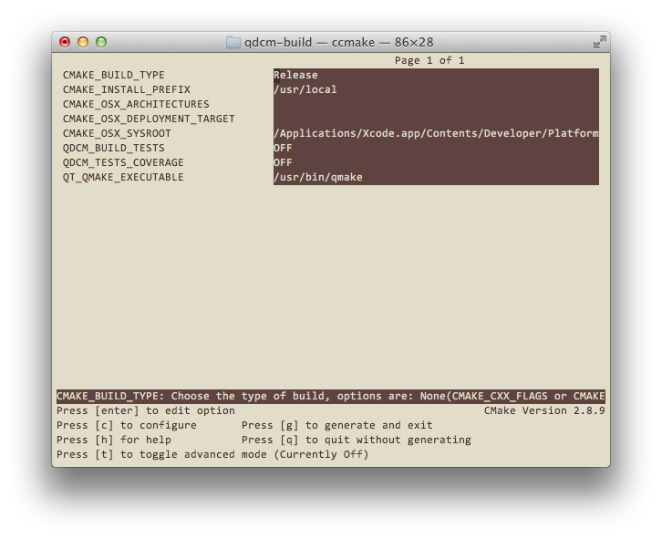

In order to compile QDCM successfully you will need Qt SDK installed. This is the only dependency QDCM has. QDCM makes use of cmake cross-platform build system, so you will need to have cmake installed as well.
Once you have QDCM source code cloned from git repository lets say in
qdcm-code directory, your first step is to configure the
project using cmake. It is recommended to keep the build directory apart
from the source code. In this example below QDCM compilation is done in
qdcm-build directory located at the same level as qdcm-code.
$ cd ~
$ git clone git://git.code.sf.net/p/qdcm/code qdcm-code
$ mkdir qdcm-build
$ cd qdcm-build
$ ccmake ../qdcm-code
Specify CMAKE_BUILD_TYPE as Release.
You may also wish to disable QDCM unit tests compilation if you do not
intend to modify the source code and run those tests.

Once the project is configured you may compile it launching make:
$ make
Compiling for MS Windows is somehow similar if you use mingw version of Qt. For MS Visual C++ based Qt, you may wish to use cmake to generate nmake build files, or directly a Visual Studio project.